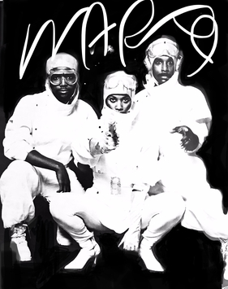

Warp 9
Warp 9, an American sci-fi-themed electro-funk hip hop group, is best known for its ground breaking, influential singles including "Nunk," "Light Years Away," and "Beat Wave," which ranked among the most iconic groups of the electro hip hop era. Described as the "perfect instance of hip hop's contemporary ramifications," Warp 9 was the brainchild of writer-producers Lotti Golden and Richard Scher. The duo wrote and recorded under the moniker Warp 9, a production project at the forefront of the electro movement.
Complete Discography & Tracklists (2)